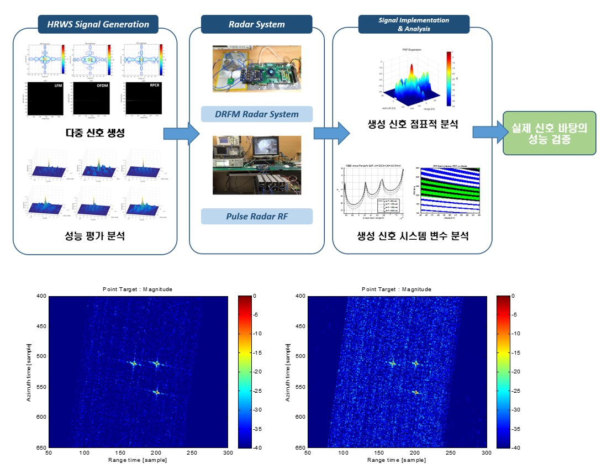
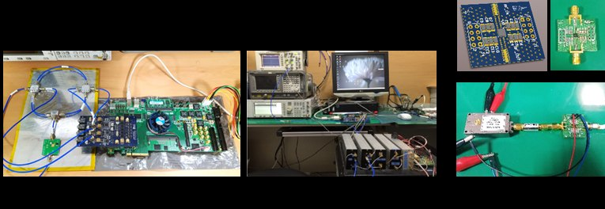
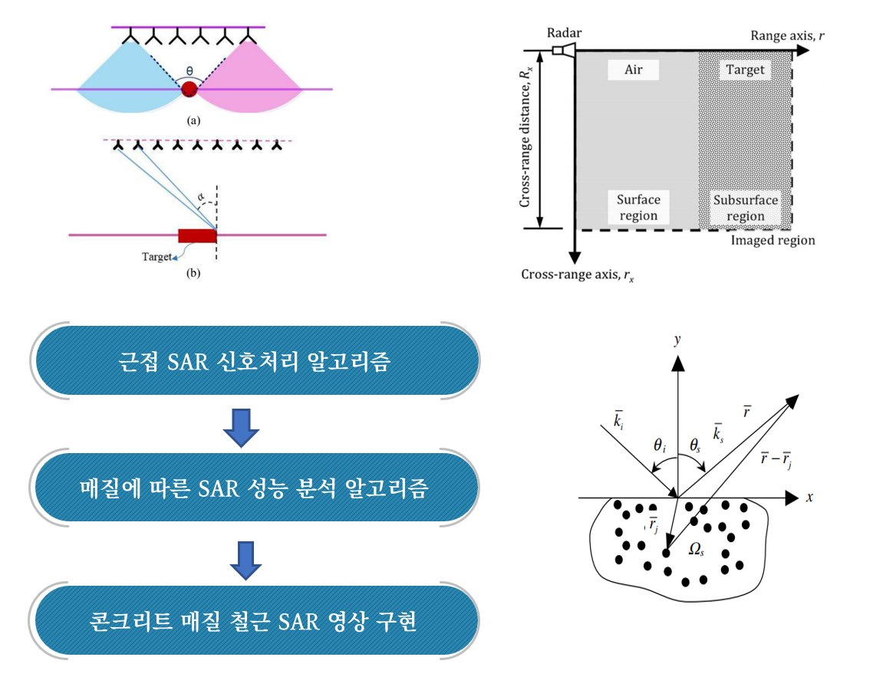

연구 분야
레이다 시스템 및 신호처리

개요
레이다 시스템 및 신호처리 분야는 지상에서 신호 발생 및 수집 장치를 개발하여 실제 레이다 송수신 시험을 수행할 수 있는 환경 및 테스트베드를 구현하는 연구 영역이다. 펄스 및 FMCW 기반 관측 레이다 시스템을 설계·구현하고, 다양한 레이다 구현 시나리오에 대한 모의 실험을 통해 레이다 시스템에 대한 M&S를 구축한다. 또한 콘크리트 내부 철근의 고해상도 SAR 영상 형성 연구와 UWB 광대역 레이다를 이용한 표적 탐지 연구를 수행한다.
세부 연구
지상 레이다 시스템 개발 및 시험
지상에서 신호 발생 및 수집 장치를 개발하여 실제 레이다 송수신 시험을 수행할 수 있는 환경 및 테스트베드를 구현한다. 근거리 표적 관측, 중거리 이동 표적 관측 및 드론이나 차량 플랫폼에서 레이다 관측 및 SAR 영상 생성 실험을 수행할 수 있는 실험 시스템을 구축한다. 다양한 레이다 구현 시나리오에 대한 모의 실험을 통해 레이다 시스템에 대한 M&S를 구축하고, 성능 예측 및 검증을 수행할 수 있는 컴퓨터 시뮬레이션 환경 구축 연구를 수행한다.
지상 RF 레이다 시스템 개발
펄스 및 FMCW 기반 관측 레이다 시스템을 설계하고 구현한다.
콘크리트 내부 철근 고해상도 SAR 영상 형성 연구
콘크리트 내부 관측 모드는 근접 SAR 영상 모델을 적용할 필요가 있으며, 콘크리트 매질에 의한 전파의 왜곡을 보정하는 과정을 거쳐야 한다. 근접 SAR 영상을 통해 수 cm 해상도를 갖는 영상정보를 획득하고, 영상 간 간섭을 통해 미세변화를 분석하여 철근 부식과 관련된 정보를 제시한다. 콘크리트 내부의 불순물 성분으로 인해 발생하는 클러터가 심각한 방해요소로 작용하므로, 이를 극복하기 위한 클러터 신호 제거 알고리즘을 구현·적용하여 성능을 개선한다.
UWB 광대역 레이다 표적 탐지 연구
UWB 광대역 레이다를 이용한 표적 탐지 실험을 수행한다. 클러터 신호 제거 알고리즘을 적용한 후 클러터가 효과적으로 제거됨을 확인한다. 클러터 신호 제거 및 SAR 알고리즘을 적용한 후 표적을 확인한다.
관련 과제
- 콘크리트용 다중 클러터 제거 및 해상도 향상을 위한 InSAR 알고리즘 개발 (2025)
- 콘크리트용 Near-field SAR 안테나 설계 및 클러터 제거 방법 개발 (2024)
- 콘크리트 내부 철근 구조 분석용 SAR 기초 알고리즘 개발 (2023–2025)
- 드론 Swarm 및 Auto Landing을 위한 충돌방지 고도탐지용 임펄스 레이더 센서 개발 (2019–2022)
- 비행기 엔진 레이더 반사 특성 모델링 개발 (2018)
- 이동형 관제 레이더 사업 (2015)
관련 논문
- 근거리 초광대역 레이다를 활용한 콘크리트 내부 고해상도 SAR 영상 형성 (2024)
- SAR 영상의 전역 품질 개선을 위한 적응형 블록 가중 최소 엔트로피 자동초점 기법 (2026)
- 압축센싱 기반의 UWB 클러터 제거를 통한 비행 드론의 근거리 탐지 성능 개선 (2021)
- 군집 비행 드론의 충돌 방지를 위한 UWB 레이다의 속도 감응형 CFAR 최적화 연구 (2021)
- DTV 방송 신호를 사용한 드론 탐지 수동형 레이다의 구현 (2021)
- 고해상도 FMCW 레이더 영상 합성과 CW 신호 분석 실험을 통한 드론의 탐지 및 식별 연구 (2018)
- High Resolution Full-Aperture ISAR Processing through Modified Doppler History Based Motion Compensation (2017)
- DDS 기반의 소형 SAR 시스템 송수신장비 개발 (2016)
- 도플러 특성 개선을 위한 랜덤 위상 및 부호율 천이 기반 저피탐 레이다 파형 (2015)
연구 사진·도식

